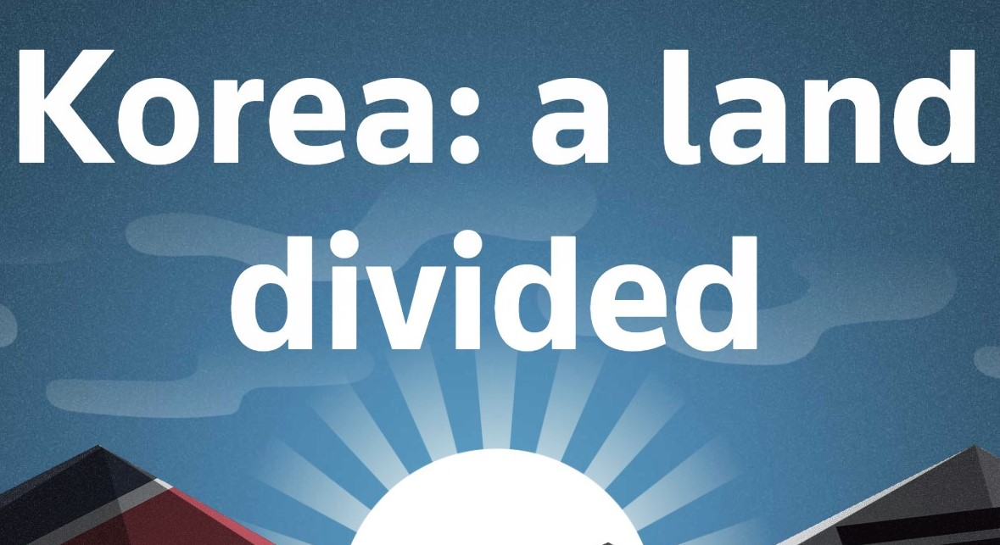
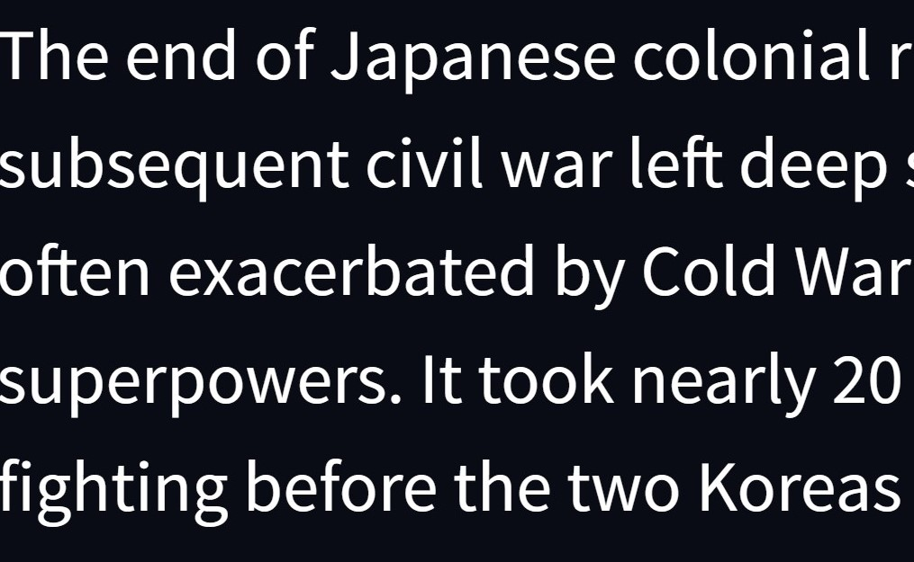
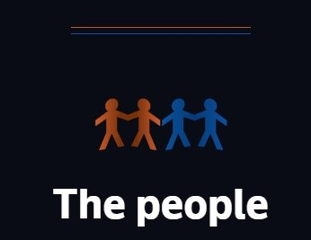
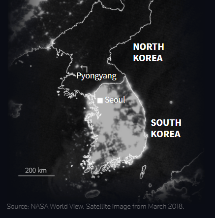
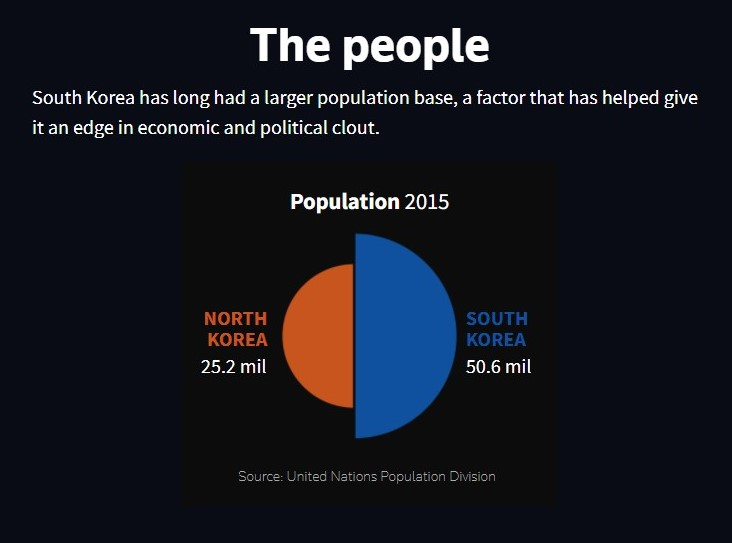
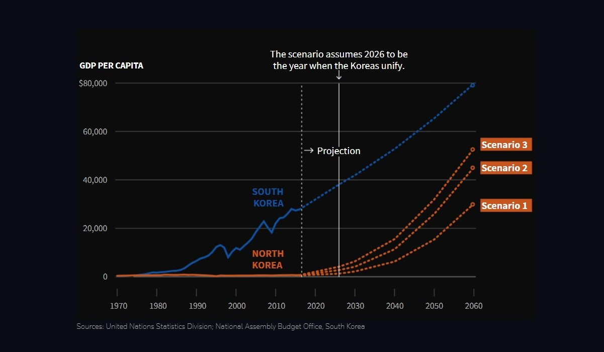
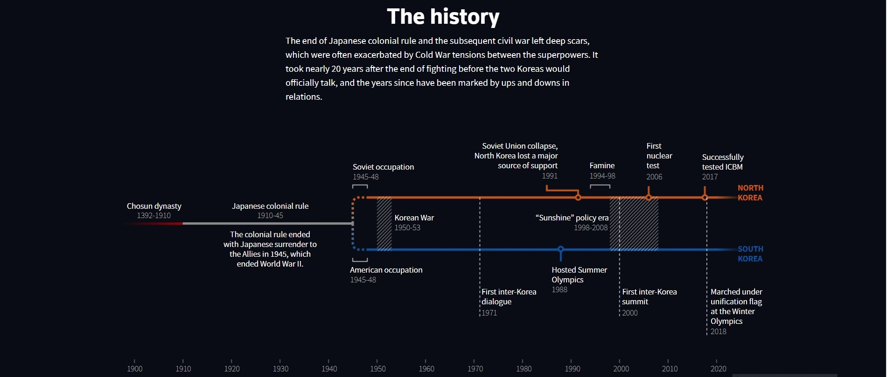

Colores
La infografía presenta un fondo negro, con textos y figuras en blanco, cuyos elementos destacados se encuentran en tonos naranjos y azules.
Tipografías

Knowledge
Fuente sin serifas, Semi-Bold.

Source Sans Pro
Fuente sin serifas, Medium.
Gráficos
Figurativo
Corresponde a una representación iconográfica

Gráfico Figurativo
Corresponde a una representación iconográfica

Gráfico figurativo
Corresponde a una imagen satelital intervenida.

Gráfico no figurativo
Corresponde a un diagrama de tarta multinivel

Gráfico no figurativo
Corresponde a un gráfico de líneas.

Gráfico no figurativo
Corresponde a una línea de tiempo.